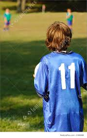

V.V.A Spartaan:
Met het eerste team spelende in de 3e klasse, is dit een leuke club waar je leuk kan voetballen. Er zijn genoeg teams zowel in de jeugd al in de senioren waar je met veel plezier een balletje kan trappen.
Link: https://www.vva-spartaan.nl/
Tennispark Sloterplas:
Met 15 tennisbanen is Tennispark Sloterplas een enorme club. Het is een gezellige club waar je ook lekker een drankje kan nemen op het terras terwijl er lekker gesport wordt.
Link: https://www.tennisparksloterplas.nl/
Klimhal Mountain Network Amsterdam:
Een klimmuur van 15 meter hoog en een oppervlakte van 200 m^2 is het een van de grootste boulder hallen van Nederland. Naast de klimmuur hebben ze ook nog een fitnesverdieping met een fysiotherapie, waardoor ze een goede sportervaring bieden.
Link: https://mountain-network.nl/klimcentra/locaties/klimhal-amsterdam/?gclid=EAIaIQobChMIsKTVlNTf5QIVReJ3Ch20swnFEAAYASAAEgIWwvD_BwE
Amsterdamse Voetbal Vereniging Sloterdijk:
Met een gezellige club en een leuke jeugd is dit een club voor iedereen. Iedereen is welkom en je kan hier lekker voetballen.
Link: http://www.avvsloterdijk.com/
Amsterdamse sportclub sterk door wilskracht:
Met het zondag 1 team in de 5e klasse is dit een club waar je gezellig op de zondag ochtend een wedstrijdje kan spelen. Met als motto: spelplezier op de eerste plaats is SDW een club waar je leuk als jeugdspeler kan voetballen.
Link: https://www.ascsdw.nl/

Tafeltennis verenging JOVO:
Met Tafeltennis Vereneging JOVO is er genoeg tijd om lekker tafeltennis te spelen, je kan op diverse tijden in de lekker vrij spelen. Ook kan je trainingen volgen om later op de competitie avonden je zelf van je beste kant te laten zien.
Link: https://www.ttvjovo.nl/
Studenten korfbal verenging Amsterdam:
Met competitieteam van S.K.V. Amsterdam is er op goed niveau een prima team om mee te spelen. Op zaterdag speel je een wedstrijd in de derde klasse (zaal) en zo kan je jezelf steeds verbeteren.
Link: http://skvamsterdam.nl/
Voetbal verenging SDZ:
SDZ is een fanatieke club met veel selectie team, de club om goed voetbal te spelen. Ook de meiden krijgen hier de kans om lekker te voetballen en hunzelf van hun beste kant te laten zien.
Link: https://avv-sdz.nl/
Yagoy postjesweg:
Voor de Yoga-liefhebbers is Yagoy Postjesweg de juiste plek. Met leuke groepslessen is het een plek waar je heerlijk relaxt aan de Yoga-wereld kan toetreden.
Link: https://yagoy.nl/
Stichting shin-Ju karate-do Amsterdam:
De Dojo: is een plaats om te trainen, voor mensen met een witte band tot een zwarte band zijn er algemene lessen. Ook gevorderde training word gegeven aan mensen met bruine en zwarte banden.
Link: https://shin-ju.nl/index.html